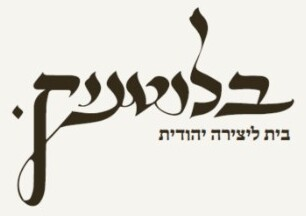

01
מספרים על הצורך
ספר תורה לבית כנסת, לקהילה, להנצחה או לאירוע משפחתי.

נחום בלוטניק, סופר סת״ם מירושלים, מזמין משפחות, קהילות ובתי כנסת לפנות לבירור רכישת ספר תורה או הזמנת ספר תורה.
נחום בלוטניק הוא סופר סת״ם הפועל בירושלים. בגלריית בלוטניק בשכונת נחלאות ניתן לברר אפשרויות לרכישת ספר תורה ולשוחח על צורכי הקהילה או המשפחה.
הגלריה נמצאת בכתובת שילה 30, נחלאות, ירושלים. לתיאום ולבירור זמינות, מפרט ומחיר יש ליצור קשר ישירות עם העסק.
סוג הכתב, מטרת ההקדשה, צרכי בית הכנסת והמועד המבוקש הם נקודת התחלה לשיחה.
ספר תורה לבית כנסת, לקהילה, להנצחה או לאירוע משפחתי.
סוג הכתב, גודל מבוקש, לוח זמנים, מפרט כשרות ותקציב.
לאחר בירור האפשרויות, ניתן לקבל מידע מותאם על הזמינות ועל תנאי ההזמנה.
המחיר תלוי בין היתר בכתב, במידות, ברמת ההידור, במפרט הבדיקות ובאביזרים הנלווים. לקבלת מחיר רלוונטי יש לברר את המפרט המבוקש מול נחום בלוטניק.
קיימים הבדלים במסורות הכתב ובמנהגי הקהילות. לפני הזמנה יש לברר את נוסח הכתב והמסורת המתאימים לבית הכנסת שבו ישתמשו בספר.
כן, ניתן לפנות לצורך בירור רכישת ספר תורה למטרת הנצחה. יש לתאם מראש פרטי הקדשה ולוחות זמנים.
יש לברר ישירות עם הגלריה את הזמינות העדכנית. עמוד זה אינו מציג מלאי בזמן אמת.
הגלריה ממוקמת בשילה 30, נחלאות, ירושלים. מומלץ לתאם ביקור מראש לאחר קבלת פרטי התקשרות מהעסק.
ספרו לנחום בלוטניק מהו סוג ספר התורה שאתם מחפשים, למי הוא מיועד ומהו המועד הרצוי. נשמח לברר את האפשרויות בהתאם לפרטי הבקשה.
פרטי הטלפון והדוא״ל של העסק יתווספו לאחר אימותם. בינתיים ניתן להיעזר בכתובת הגלריה.